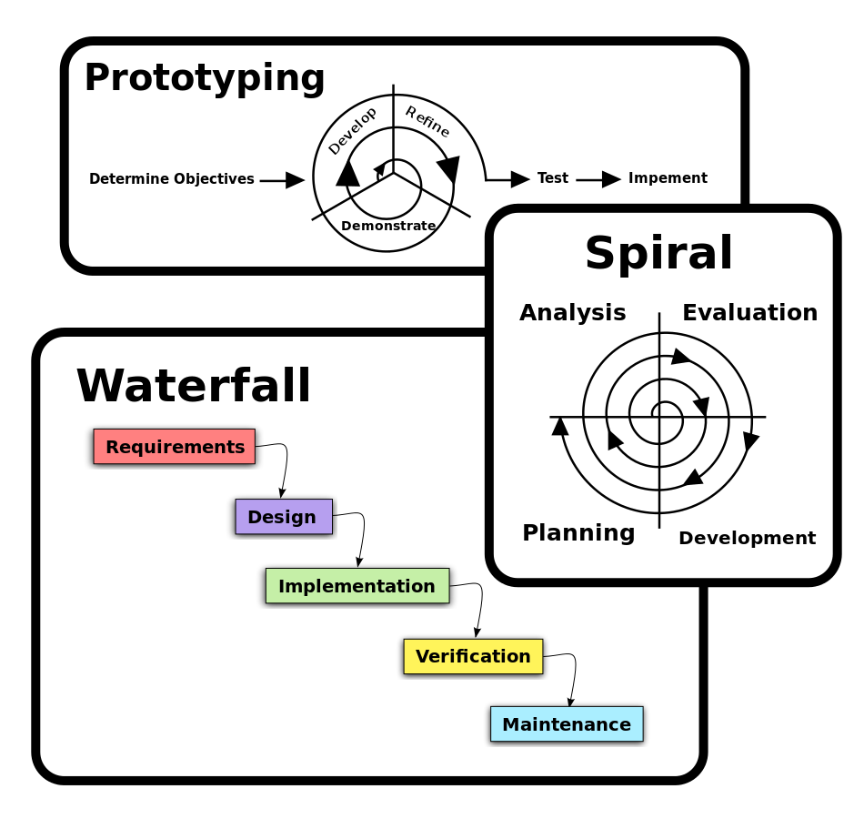

Software Development Life Cycle Methodology

Software Development Life Cycle Methodology are the practices by which software is created by teams looking to develop software.
The SDLCM are methods by which the developers plan to design and create their technology. These plans are structures by how the teams can work to make specific projects work more efficiently.
There are many different methods of production for the software, with the three detailed on this site being Spiral, Scrum, and Waterfall methodologies.
If you wish to learn more about any of the three stated methods, please click on the link to the corresponding page above.